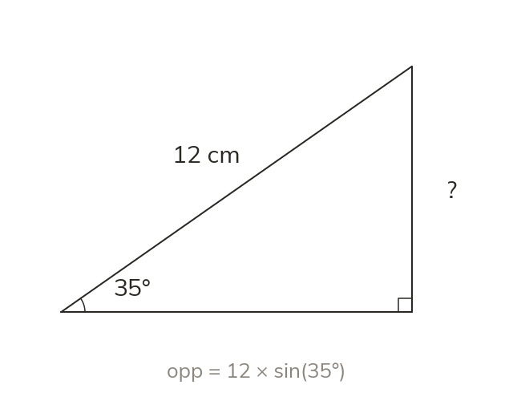

Why the unknown-on-top case is a one-step equation
With the unknown on the top, the ratio is already a one-step equation. Multiply both sides by the known denominator, giving opp = hyp × sin (x).
A trig ratio like is just a fraction equal to a number. If the unknown side is on the numerator (the top) and the other two quantities - the angle and the denominator - are known, then the ratio is already an equation with the unknown isolated except for one operation: multiplying both sides by the denominator clears the fraction. So opp = hyp × sin (x) when the hypotenuse is known and the opposite is unknown. The same logic gives adj = hyp × cos (x), and opp = adj × tan (x).